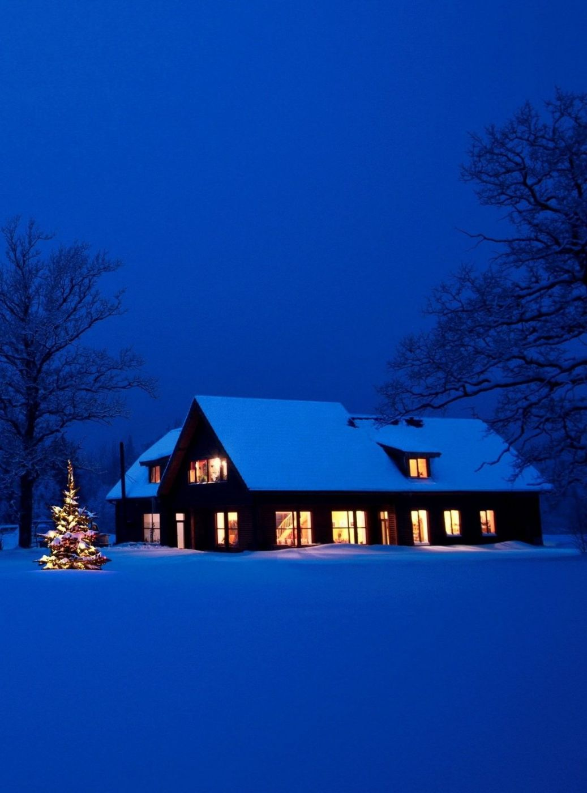
We listen to your plan,watch for the pause,and keep the frame thatholds it
( ABOUT )
A photo and film studio
that starts with questions,
light, and time
하프레스트는 인물과 공간, 공연을 찍는 사진·영상 스튜디오입니다. 촬영을 약속하면 먼저 30분 동안 통화합니다. 무엇을 하는 사람인지, 사진을 어디에 쓰는지, 지금 가장 자주 받는 질문이 무엇인지 묻습니다. 그 답으로 조명의 방향과 촬영 거리를 정합니다. 촬영은 성수동 스튜디오(120㎡, 천장 높이 4.2m)나 현장에서 하고, 보정과 납품까지 같은 팀이 맡습니다.
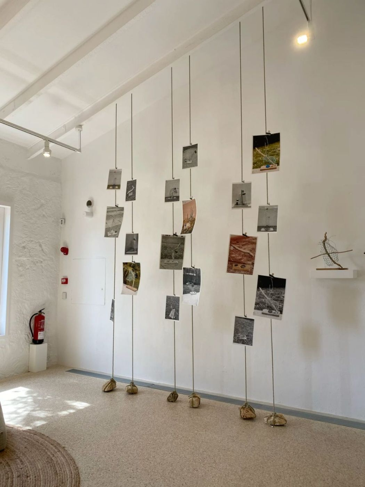
( OUR ATTITUDE )
We work as your second eye, turning
a brief into a picture
하프레스트는 의뢰인의 두 번째 눈으로 일합니다. 기획서에 적힌 문장을 읽고, 그 문장이 사진 한 장으로 바뀌었을 때 무엇이 보여야 하는지 정합니다. 보여 줄 것 하나를 정하면 나머지는 뺍니다. 배경, 소품, 조명 개수까지 그 기준으로 줄입니다.
“한 장에 하나만 보이게 합니다.”
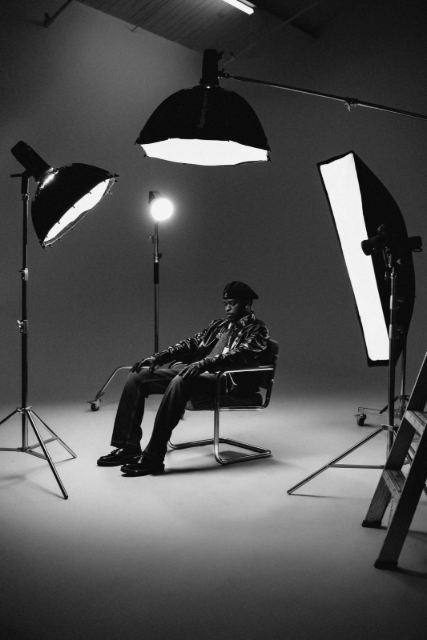
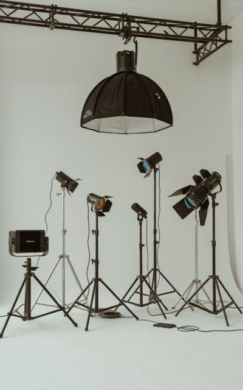
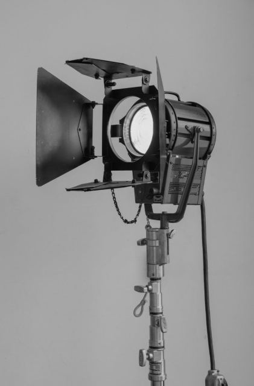
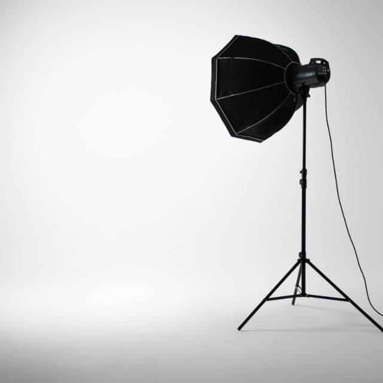
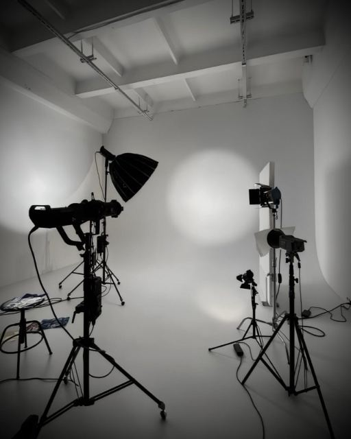
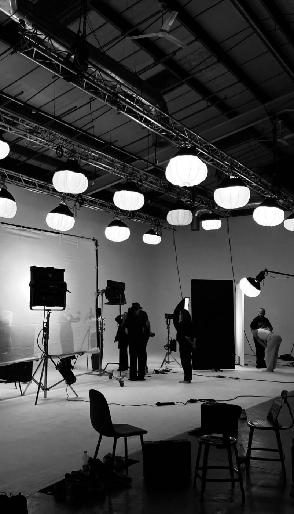
( WORK PROCESS )
We ask before we light. We
wait before we shoot
모든 촬영은 질문 목록에서 시작합니다. 새 제품을 알릴 때인지, 지금의 모습을 남겨 둘 때인지에 따라 조명과 렌즈가 달라집니다. 촬영 당일에는 첫 20분을 대화에 씁니다. 카메라를 들기 전에 “이 사진을 누가 가장 먼저 보나요?”, “일 년 뒤에 이 사진을 어디에 걸어 두고 싶나요?”를 묻습니다. 대답이 짧아지고 자세가 편해지면 그때 촬영을 시작합니다.
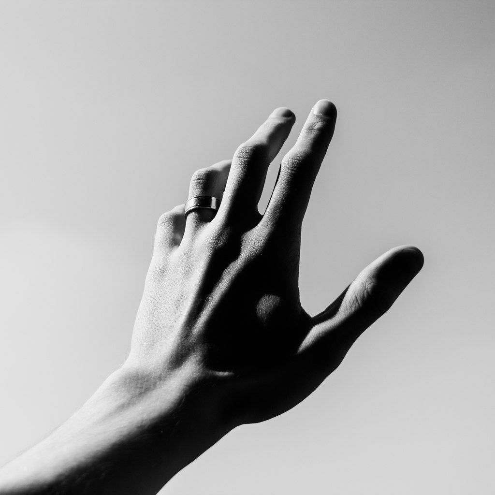
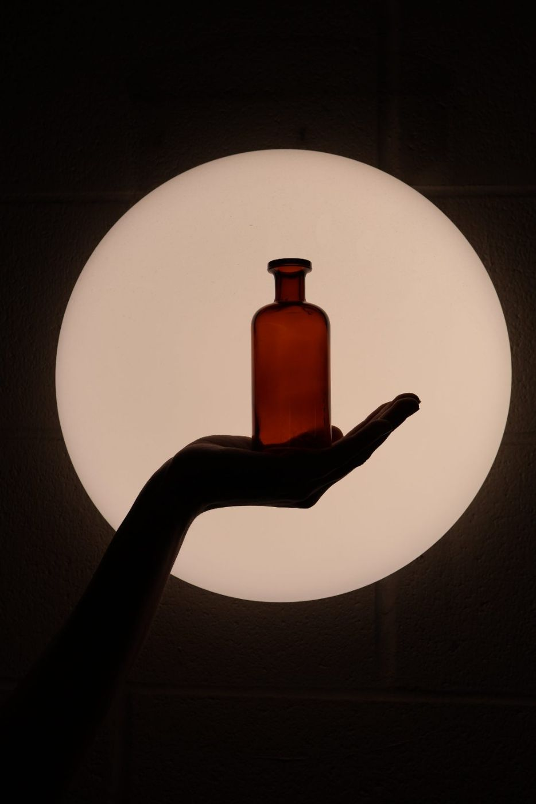
( TEAM )
We keep pace with your schedule
하프레스트는 사진가 3명, 영상 감독 2명, 작곡가 1명, 프로듀서 1명으로 일합니다. 프로젝트마다 담당 프로듀서 한 명이 처음부터 납품까지 연락을 맡습니다. 사진과 영상, 음악을 한 팀이 만들기 때문에 촬영 현장에서 바로 편집 방향을 정할 수 있습니다. 일정이 급하면 촬영 다음 날 1차 보정본을 보냅니다.
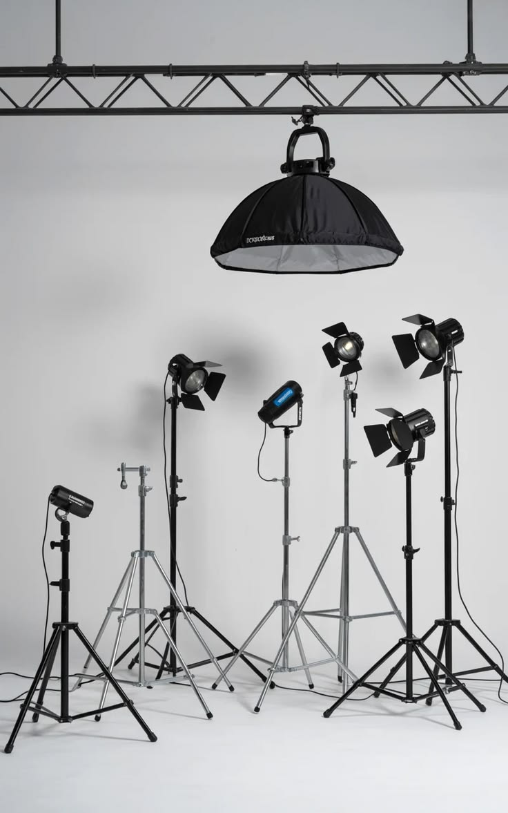
자주 묻는 질문
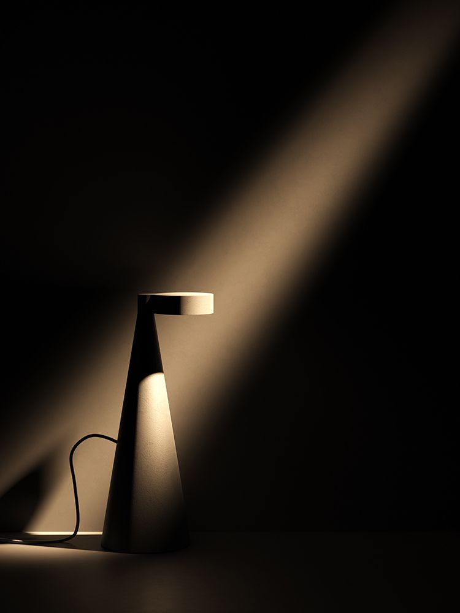
Part 1. 포트레이트 촬영에 대하여
“대화 20분, 촬영 40분으로 진행합니다.”
A. 낯선 카메라 앞에서는 누구나 어깨와 턱에 힘이 들어갑니다. 대화를 나누는 20분 동안 조명과 거리를 맞추고, 그 사람이 편할 때 짓는 자세를 봅니다. 촬영은 그 자세에서 시작합니다.
A. 대부분 처음 10분은 어색해합니다. 그래서 첫 10분에 찍은 사진은 고르지 않습니다. 자세를 따로 지시하지 않고, 편한 옷과 평소에 쓰는 물건을 하나 가져오시면 됩니다.
A. 보정본 10장과 원본 전체를 촬영 후 7일 안에 보냅니다. 급하면 3일 안에 5장을 먼저 보냅니다. 추가 보정은 장당 따로 받습니다.
Part 2. 브랜드 협업에 대하여
“누가 볼 사진인지부터 정합니다.”
A. 기획서 검토 → 30분 통화 → 촬영 계획서와 견적 → 사전 답사 → 촬영 → 1차 보정본 → 최종 납품 순서입니다. 평균 3~6주가 걸립니다.
A. 기획서의 문장을 사진 한 장으로 바꿨을 때 무엇이 보여야 하는지 정리합니다. 촬영 계획서에 컷 목록, 조명 배치도, 필요한 소품과 인원을 적어 보냅니다.
A. 함께 맡길 수 있습니다. 같은 팀이 만들기 때문에 사진의 색과 영상의 편집 속도, 음악의 템포를 한 기준으로 맞춥니다.
Part 3. 하프레스트에 대하여
“이름은 악보의 반쉼표에서 왔습니다.”
A. 반쉼표(half rest)는 두 박자 가운데 반 박자를 쉬라는 기호입니다. 촬영에서도 동작과 동작 사이의 짧은 쉼에 그 사람의 습관이 나온다고 봅니다. 그 순간을 찍는다는 뜻으로 지었습니다.
A. 공연을 여는 쪽도 기록을 남기는 쪽도 우리여서, 리허설부터 커튼콜까지 끊기지 않고 남길 수 있습니다. 공연은 연 6~8회 엽니다.
A. 촬영이 없는 날에 한해 대관합니다. 반나절(4시간)과 하루(8시간) 단위로 받고, 기본 조명 6대가 포함됩니다.